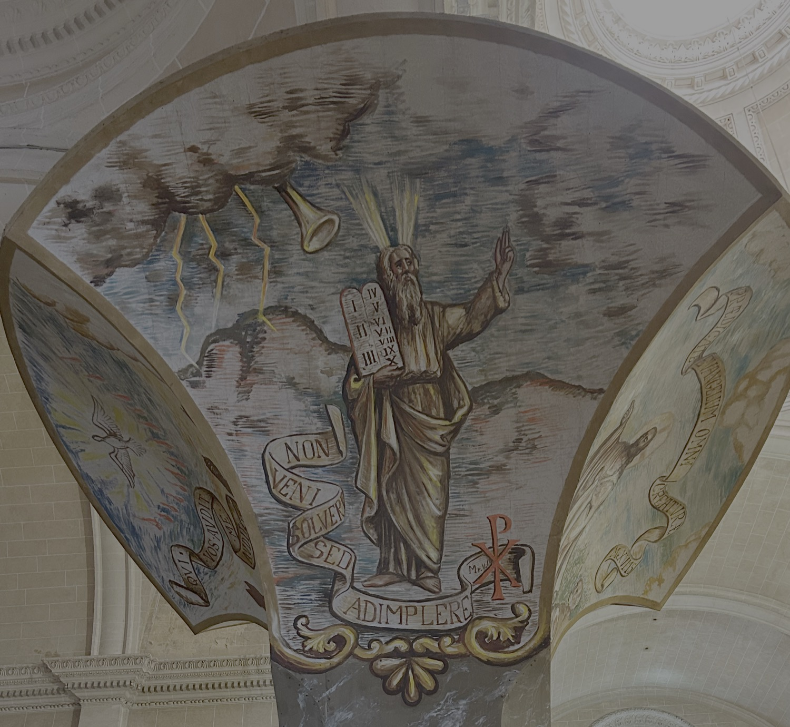

En este fresco aparece Moisés descendiendo del monte Sinaí con las Tablas de la Ley. La filacteria reproduce las palabras de Jesús citadas en el Evangelio de san Mateo (5:17) con las que declara que su doctrina no sustituye los mandamientos del Antiguo Testamento, sino que los lleva a su plenitud: “No he venido a abolir, sino a dar cumplimiento”. El crismón, monograma formado por las dos primeras letras de la palabra griega Christos (Χ y Ρ), superpuesto a la filacteria, indica que estas palabras son pronunciadas por Cristo, aunque no aparezca representado en la escena.
Los frescos del tornavoz del púlpito son obra de Mn. Llorenç Bonnín (1952). El tornavoz reproduce la forma del que Antoni Gaudí diseñó para el púlpito mayor de la Seu, retirado en 1971.